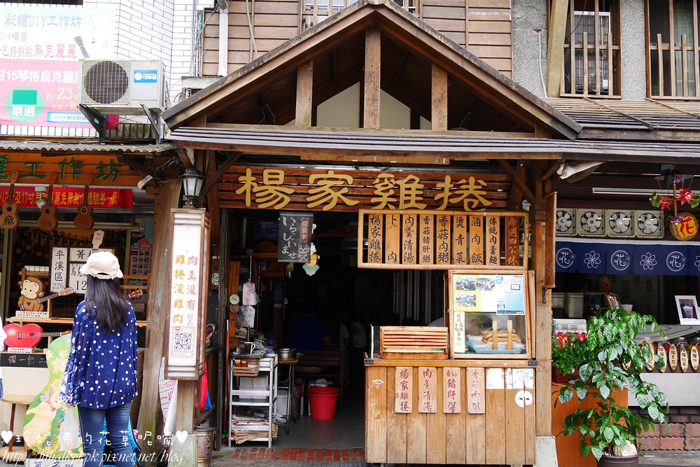
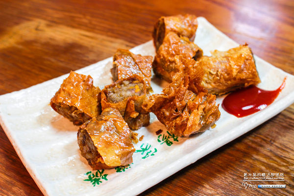

楊家雞捲
google評價：3.7★
店家資訊
地址：新北市平溪區青桐街127號
營業時間：早上9:15到晚上5:15
店家電話：02-2495-1056

推薦菜單
雞捲50元 卜肉50元 香菇豬肝粥30元
肉羹清湯40元/50元 肉羹麵45元 香菇肉粥20元
燙青菜30元 白飯10元 魯肉飯20元
顧客評論
楊家雞捲是平溪區歷史很悠久的雞捲，雞捲因為以前食物得來不易，沒有冰箱，所以楊家將沒賣出的食物加工，又豆皮包起來油炸就成了現在的雞捲。雞捲先切斷再回鍋炸，非常脆，加上裡面的豬絞肉、芋頭、洋蔥等餡料，口味非常豐富。店家也有賣肉羹湯，是魚漿形式的肉羹，吃起來香Q順口，配上白蘿蔔熬煮的湯，清甜好喝。